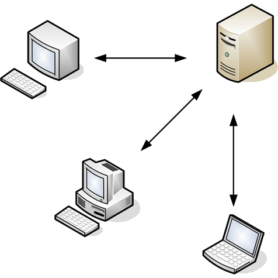
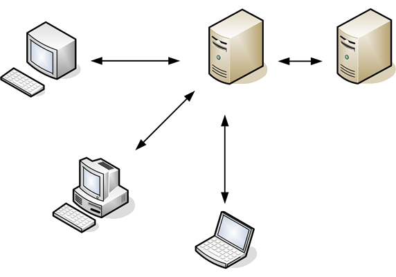

Portáltechnológia MSc
1. HTML, JS alapok
Tartalom
Használt eszközök
Portáltechnológia BSc összefoglalás
JS alapjai
Chrome
Ctrl + Shift + I (Win: F12)
Jobb kattintás: Inspect Element
copy(document.body.innerText) clear() $0 - jelenleg kiválasztott elemconsole.log('üzenet'); inspect($0);
Chrome üzenetek
console.log("Hello world");
//console.log(2, 4, 5, "foo");
//console.log("%s is %d years old", "Bob", 42);Kód futtatása
Színezés
console.error("Error");
console.warn("Warning");Kód futtatása
Idő, csoportok
console.time("time");
console.timeEnd("time");
console.group("cím");
console.dir({name: "Gipsz Jakab"});
console.groupEnd("cim");Kód futtatása
Network
kék vonal: DOMContent event fired
piros vonal: Load event fired
képek és iframe-ek is betöltődnek
Chrome egyéb
HTML5 demos
Audits
Hálózat használat és oldal teljesítmény teszt
Profiles
Egyéb software-ek
<script src="modernizr.js" type="text/javascript"></script>
<script type="text/javascript">
if (Modernizr.websockets) {
console.log('Web Socket support');
} else {
console.log('no Web Socket support');
}Kód futtatása
Információ
Adatszerkezetek - tömb (JS)
//var cars = new Array("Volvo", "Saab", "Volkswagen");
var cars = ["Volvo", "Saab", "Volkswagen"];
console.log(cars);
cars[0] = "Mazda";
console.log(cars);
Kód futtatása
Adatszerkezetek - Asszociatív tömb (PHP)
students = array(
"AVFBVH" => "Kiss Géza",
"JKKLNN" => "Nagy Sándor",
"ZHJUKJ" => "Kovács Péter"
);
echo students['AVFBVH']." ".students['ZHJUKJ']);
students['AVFBVH'] = "Nagy Péter";
students['ZHJUKJ'] = "Kovács András";
Adatszerkezetek - Objektum (JS)
var students = {}; //new Object();
students.neptun = "AVFBVH";
students.name = "Kiss Géza";
students.age = 20;
/*var students = {
neptun: "AVFBVH",
name: "Kiss Géza",
age: 20
}*/
console.log(students.name);
Kód futtatása
Kliens-szerver architektúra

Kliens-szerver architektúra
A kommunikációban résztvevő két fél nem egyenrangú módon vesz részt, hanem dedikált szerepeket töltenek be.
A jellemzően a kliens kezdeményezi, mégpedig azzal a céllal, hogy valamilyen műveletet vagy lekérdezést végeztessen el a szerverrel. A szerver a kérést megkapva elvégzi a megfelelő lépéseket, majd az eredményt a kliens felé továbbítja.
Kliens
Olyan számítógép hozzáfér egy (távoli) számítógép szolgáltatáshoz
A feldolgozási kérések forrásául szolgáló fél
Szerver
A szerver-kliens architektúrában a tényleges feldolgozást végző, a klienstől érkező kérésekre a válaszokat elkészítő fél
webszerver, levelezőszerver, fileszerver
A szerverek a klienseknél általában jóval nagyobb számítási kapacitással, memóriával, lemezterülettel, és hálózati sávszélességgel rendelkeznek, hogy akkor is gyorsan tudják a beérkező kéréseket kiszolgálni, ha egyszerre több kliens fordul hozzájuk.
Kliens-szerver architektúra előnyei
Sokoldalú, üzenetalapú moduláris infrastruktúra
Növeli a használhatóságot, rugalmasságot, együttműködési lehetőséget és a bővíthetőséget
3 lépcsős architektúra

Kliens
Webszerver
Adatbázis szerver
Átalakuló webes architektúra
Múlt
Szerverek generálták a HTML-t a különböző böngészők számára
Különböző JS és CSS a böngészők számára
Kliensek ugyanarról a szerverről töltik le az adatot, ahonnan a HTML-t
Jelen/Jövő
Szerverek nem feltétlenül erőforrásigényesek, böngészők okosak
Kliens framework-ök elrejtik a böngészők közötti különbségeket
Kliensek több szerverről töltik le az adatot
HTML
hiperszöveges jelölőnyelv
internetes szabvány
változatai
CSS
Cascading Style Sheets
stílusleíró nyelv
HTML/xHTML/HTML5 típusú strukturált dokumentumok megjelenését írja le
HTML kezdete óra jelen van
CSS level 1 (1990)
CSS level 2 (1998)
CSS level 3 (jelenleg is fejlesztés alatt áll)
Style precedenciák
CSS
style
css !important
style !important
GET/POST
GET Teszt
URL részeként
Jelszó továbbítására nem alkamas
Querystring limit
POST Teszt
PUT
DELETE
Querystring
Adat része az URL-nek
http://server/path/program?query_string
Elválasztójelek: &, &, ;
PHP - $_GET asszocatív tömbJS - document.URL
document.location.substring(fullURL.indexOf('?')+1, document.location.length)
URL rewrite - szép URL-ek
Session
Munkamenet
Felhasználó azonosítása
SESSION_ID – egyedi kulcs
Session a server oldalon van eltárolva
Reguláris kifejezések
Regular expression, regex, regexp
Szintaktikai szabályok szerint leírt string, amivel meghatározható stringek egy halmaza
Használható
Szöveg keresésekor
Minták keresésekor
Széles körben támogatott
Szövegszerkesztők
Programozási nyelvek
var str = "The rain in SPAIN stays mainly in the plain";
console.log(str.match(/the/gi));
//console.log(str.match(/ain/gi));
Kód futtatása
Mi az AJAX?
Asynchronous JavaScript & XML
Információ lekérése a háttérben az oldal újratöltése nélkül
Technológiák összessége
HTML, XHTML & CSS
DOM
XML, XSLT, JSON
XMLHttpRequest objektum
JS
$.ajax({
url: "test.txt"
}).done(function(data) {
console.log(data);
});Kód futtatása
JS framework
Összegyűjtött függvények
Használatával jelentősen felgyorsítható a fejlesztés
Felület a különböző böngészők egységes kezeléséhez
Comparison of JS frameworks
Model, View, Controller
softwaremérnöki munkában használt szerkezeti minta
Üzleti logika és a megjelenítés szétválasztása
Interface-ek képzése
Model
Az alkalmazás által kezelt információk tartomány-specifikus ábrázolása
Átmeneti tároló eljárások
Állandó tárolóval való kapcsolat
View
Megjeleníti a modellben tárolt információkat egy megfelelő alakban, mely alkalmas a felhasználói interakcióra
Controller
Az eseményeket, jellemzően felhasználói műveleteket dolgozza fel és válaszol rájuk, illetve a modellben történő változásokat is kiválthat
Oldal teljesítménye
Oldal teljesítményének mérése
Yahoo mérnökei (front-end engineer)
34 kritikus pontot állapítottak meg, amelyek hatással vannak a portál teljesítményére (23 mérhető)
FF, Chrome, Opera, Mobile
Smush.itTM
Smush.itTM képeket tömörít
Tömörítés után elkészít egy reportot, hogy hány százalékkal kevesebb helyet foglalnak a képek
Lehetséges, hogy formátumot vált
A képek zip fileban letölthetőek
Smush.itTM
Static
Alapértelmezett pozíciója az összes elemnek
Az elemet oda tesszük ki, ahol normál esetben megjelenne
Nem kell kiírni, kivéve ha felül akarunk írni egy előző értéket
#div-1 {
position:static;
}Teszt
Relative
Relatív pozíció megadásával az alábbi tulajdonságokat lehet használni
Meghatározott értékkel toljuk el az elemeket a jelenlegi pozíciójukból
#div-1 {
position:relative;
top:20px;
left:-40px;
}Teszt
Absolute
Abszolút pozíció használatával az elemet eltávolítjuk a dokumentumból és a megfelelő pozícióra tesszük
Bal felső sarok a 0,0
#div-1a {
position:absolute;
top:0;
right:0;
width:200px;
}Teszt
Absolute és relative
Ha relatívan pozícionáljuk a div-1-et, akkor az elemek a div-1-en belül a div-1-hez lesznek relatívak
Div-1a-nak ezt követően abszolút pozíció beállítva a div-1-hez képest pozícionálhatunk
#div-1 {
position:relative;
}
#div-1a {
position:absolute;
top:0;
right:0;
width:200px;
}
Teszt
2 abszolút hasáb
#div-1 {
position:relative;
}
#div-1a {
position:absolute;
top:0;
right:0;
width:200px;
}
#div-1b {
position:absolute;
top:0;
left:0;
width:200px;
}Teszt
2 abszolút hasáb
Lehetséges az egyes elemek lebegtetése
"Elnyomjuk" az egyes elemeket jobbra vagy balra, amennyire csak lehetséges
#div-1a {
float:left;
width:200px;
}Teszt
Hasábok lebegtetése
Több div lebegtetése esetén, mindkettőt lebegtetni kell, ha egymás mellé akarom betenni
display:block-olt elemek egymás mellé csoportosítására
#div-1a {
float:left;
width:150px;
}
#div-1b {
float:left;
width:150px;
}
Teszt
Hasábok lebegtetése
A clear paranccsal törölhetjük a lebegtetést
#div-1a {
float:left;
width:190px;
}
#div-1b {
float:left;
width:190px;
}
#div-1c {
clear:both;
}Teszt
JavaScript ma
learning Javascript used to mean you weren't a serious software developer - today, not learning Javascript means the same thing
James Governor (@monkchips)
JavaScript
objektumalapú szkriptnyelv
gyengén típusos
C, Java és a SmallTalk alapjait másolja
Brendan Eich a Netscape Communications mérnöke fejlesztette ki (1995, NN 2.0)
ECMAScript 3 – 1999
ECMAScript 5 – 2009 (nagy része még mindig nincs implementálva)
Kiegészítés
nem tökéletes nyelv, sőt rengeteg tervezési hiba van benne
minden programozási nyelvből építkezik
15 éves nyelv
8 nap alatt készült el
Figyelni kell arra, hogy mit nem tilos (illik) csinálni, annak ellenére, hogy a nyelv illetve a fordító(böngésző) megengedi
Szerkesztés, futási környezet
text/javascript, application/javascript
Futási környezet
Szabványosították a nyelvet, azonban a különböző böngészők eltérő módon implementálják
Típusok
function
Object
string
undefined
number
boolean
Változó deklarálás:
var valtozoNevKisNagyBetuvel = 0 || null || undefined || '' || false;Függvények:
// Anonymous
function() {
var alma = ’belma’;
doSg();
return true;
}
// Named
function doSg(param1, param2) {
return false;
}
JS OOP
var Tree = function(colorCode) {
this.colorCode = colorCode;
};
Tree.prototype.getColor = function() {
return this.colorCode;
};
var AppleTree = function(colorCode) {
this.colorCode = colorCode;
};
AppleTree.prototype = new Tree();
var appleTree = new AppleTree("red");
console.log(appleTree.getColor());Kód futtatása
JavaScript: The Good Parts - Douglas Crockford
Bevezető
JavaScript egy fontos programnyelv:
webböngésző nyelve az egyetlen nyelv, amelyet az összes böngésző támogat
DOM (Document Object Model) a böngésző API-ja
szegényes leírás
inkonzisztens implementáció
Java Appletek hanyatlása után a JavaScript a web nyelvévé vált
Gyenge típusosság
Erős típusosság esetén már a compiler kiszűri a hibákat
minél hamarabb kiszűrjük és javítjuk a hibákat, annál "kevesebbe kerül"
Nincs szükség castolásra (Zeros in JavaScript )
Objektumok
Objektumok létrehozhatóak a komponenseik felsorolásával
JSON – JavaScript Object Notation
var myObject = new Object();
// var myObject = {szam: 4, szo: "Hello", fuggveny = function() {console.log("Hello");}
myObject.szam = 4;
myObject.szo = "Hello";
myObject.fuggveny = function() {console.log("Hello");}
console.log(myObject.szam);
myObject.fuggveny();Kód futtatása
Prototípusos öröklődés
Osztály nélküli objektum rendszer
Objektumok más objektumoktól örökölhetnek tulajdonságokat
var tomb = [2, "kutya", {nev: "Zoli", kor: 18}, 4];
Array.prototype.has = function(value) {
for (l=0; l != this.length; l++) {
if (this[l] == value) return true;
}
return false;
}
console.log(tomb.has(1)+" "+tomb.has(2));Kód futtatása
Bad parts
Globális változók használatára épül
Az összes felső szintű változó globális objektumba kerülnek egy névtér alá
több könyvtár használata esetén konfliktus lehetséges
Function scoping van és nem block scoping
var executeMe = function() {
var teszt = "teszt";
if (teszt === "teszt") {
var teszt2 = "teszt2";
}
console.log(teszt2);
};
executeMe();
Kód futtatása
Első alkalmazás
html
<html>
<body>
<pre>
<script src="program.js"></script>
</pre>
</body>
</html>
javascript
document.writeln('Hello, world!');
Kommentek és nevek
Sor: // komment
Blokk: /* komment */
Nevek elnevezési szabályai
Nem engedélyezett a foglalt nevek használata
for, function, class stb.
Kivételek
Nem használhatóak sem paraméternek, sem attribútumként
Számok
Egy fajta szám típus létezik
Minden szám 64-bites lebegőpontos
Javaban a double
1 és a 1.0 megegyezik
NaN egy szám, amelyet egy művelet eredményez, amely nem képes normális eredményre
Semmivel nem egyenlő, még saját magával sem detektálása: isNaN( number )
Infinity reprezentálja az összes 1.797e+308-nál nagyobb számot
String
' vagy " határolja
0 vagy több karakter
\ az escape karakter
Nincs karakter típus
"A" === "\u0041"
.length tulajdonság
.toUpperCase()
\', \"
\\ – backslash
\/ – slash
\b – backspace
\f – formfeed
\n – new line
\r – carriage return
\t – tab
\u – 4 hexadecimális szám
Statement
Végrehajtási egység
futtatható állítások sorozata
nyitó és záró <script> tag között lévő script egy végrehajtási egység
azonnali fordítás és végrehajtás
nincs linker, ezért egy közös névtér alá helyez mindent
(a compiler által legenerált objektumokat összefűzi egy futtatható állománnyá)
function-ön belül használva a var parancs private változók lesznek
Operátor precedencia
Member(., []), new
function call()
++ and --
!, ~, unary +, unary - (e.g. -1), typeof, void, delete
*, /, %
+ and -
bitwise shifting (<<, >>, >>>)
relational(<, <=, >, >=), in, instanceof
equality(==, !=, ===, !==)
bitwise-and (&)
bitwise-xor (^)
bitwise-or (|)
logical-and (&&)
logical-or (||)
conditional (?:)
all assignment operators
comma (,)
Alapvető utasítások
Deklaráció
var borso;
var alma = "szöveg";
var a = 1, b;Elágazás
if (a == 1) {
callFunc();
} else {
callFunc2();
}
switch (a) {
case 1:
callFunc();
break;
case 2:
callFunc();
default:
}
For ciklus
for (inicializáció; kondíció; inkrementálás) { ismétlődő kód}
mind a 4 rész opcionális
inicializálás részben bármilyen érvényes kifejezés szerepelhet
kondíció és az inkrementálás rész nem tartalmazhat deklarációt
for (;;) {
console.log(" hello");
}
for (var i=0;i<arr.length;i++) {
// do sthing here
}
arr.forEach (function(each) {
// do sthing here
})
For ciklus példa
function sum(arr) {
for (var i=arr.length, r=0; i--; r += arr[i]);
return r;
}
console.log(sum([3,5,0,-2,7,8]));Kód futtatása
for (
var i=2, r=[0,1];
i < 15 || console.log(r);
r.push(r[i-1]+r[i-2]), i++
);
Kód futtatása
Alapvető utasítások
try {
x = 3 / y;
} catch (err) {
console.log(err.message);
}
Kód futtatása
Operátorok
+, -, *, /, %
||, &&
===, !==
>=, <=, >, <
Literálok
Number
String
function
function nev(parameter) {}
Object
var x = new Object();
x.szoveg = "4";
x.szam = 6;
x = {szoveg: "4", szam:6};
Array
Nem támogatja az asszociatív tömböket
var z = new Array();
var x = ["szoveg", 1, /[ell]/i, 4.0, {'color':5}, function() {return 5;}];
var y = [x];
console.log(y[0][1]);Kód futtatása
Objektum példa
var flight = {
airline: "Oceanic",
number: 815,
departure: {
IATA: "SYD",
time: "2004-09-22 14:55",
city: "Sydney"
},
arrival: {
IATA: "LAX",
time: "2004-09-23 10:42",
city: "Los Angeles"}
};
console.log(flight["airline"]+" "+flight.departure.IATA);Kód futtatása
Prototype
Minden objektum egy prototípustól képes örökölni
Object.prototype
if (typeof Object.beget !== 'function') {
Object.beget = function (o) {
var F = function () {};
F.prototype = o;
return new F();
};
}
var another_stooge = Object.beget(stooge);
Function
function-ök objektumok
objektumok név – érték párok, amelyek a Object.prototype-ből eredeztethetőek
a function-ök a Function.prototype-ból eredeztethetőek
két rejtett lehetőséget rejt magában
kontextus
kód
var add = function (a, b) {
return a+b;
}(function () {
// függvény törzs
})();
Prototype bővítés
Number.prototype.integer = function () {
return Math[this < 0 ? 'ceil' : 'floor'](this);
};
console.log((-10 / 3).integer());Kód futtatása
Metódus hívási minta
Amikor a függvény egy objektum tulajdonságaként van eltárolva
var myObject = {
value: 0,
increment: function (inc) {
this.value += typeof inc === 'number' ? inc : 1;
}
};
myObject.increment();
console.log(myObject.value);
Kód futtatása
Függvény hívási minta
Amikor a függvény nem egy objektum része
var add = function(a, b) {
return a+b;
};
console.log(add(3, 4));Kód futtatása
Konstruktor hívási minta
A Javascript egy prototípusosan öröklődő nyelv
Az objektumok más objektumoktól örökölhetnek
var Quo = function (string) {
this.status = string;
};
var myQuo = new Quo("confused");
Apply függvénnyel való meghívás
var x = 10;
var o = { x: 15 };
function f(message) {
console.log(message);
console.log(this.x);
}
f("invoking f");
f.call(o, "invoking f via call");
f.apply(o, ["invoking f through apply"]);Kód futtatása
Scope
A programozási nyelvekben meghatározza a láthatóságot és az élettartamot
Automatikus memória management
Megakadályozza a névütközéseket
Nem block scope van, hanem function scope
var foo = function() {
var a = 3, b = 5;
var bar = function() {
var b = 7, c = 11;// a is 3, b is 7, and c is 11
a += b + c; // a is 21, b is 7, and c is 11
};
// a is 3, b is 5, and c is not defined
bar();
// a is 21, b is 5
};
Closure
var myObject = function() {
var value = 0;
return {
increment: function (inc) {
value += typeof inc === 'number' ? inc : 1;
},
getValue: function ( ) {
return value;
}
}
}();
Feladatok
Készíts egy olyan prototípus függvényt, amely egy tömbben csak az egyedi elemeket hagyja benne!
Készíts egy olyan prototípus függvényt, amely egy stringnek az első betűjét naggyá változtatja, a többit kicsivé!
←
→
#